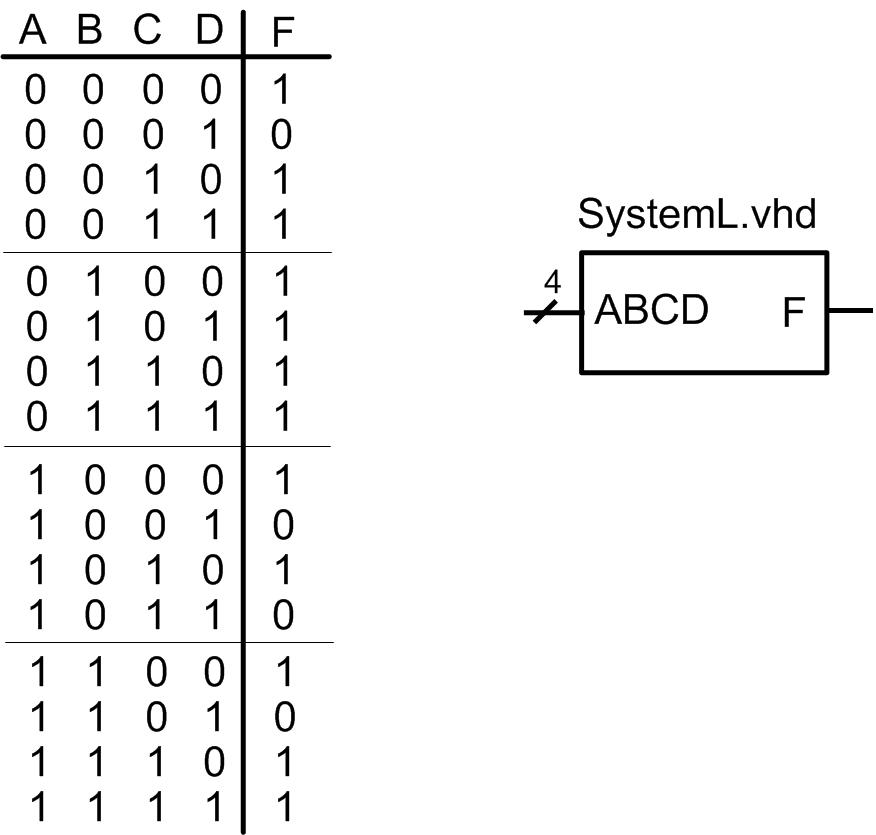

HW 8.5 - Packages
______________________________________________________________________
Problem 8.5.14
Design a self-checking VHDL test bench that reads in test vectors from an external file to verify the functional operation of the system in Figure 8.7. Create an input text file called “input_vectors.txt” that contains each input code for the vector ABCD in the order they appear in the truth table (i.e., “0000”, “0001”, “0010”, …) on a separate line. The test bench should read in each line of the file individually and use the corresponding input vector to drive the DUT. Write the output results to the STD_OUTPUT of the simulator.
NOTE: You will need to design the SystemL.vhd system. Use whatever modeling approach you wish to implement the logic.
NOTE: Refer to the examples given in section 8.5 of the book for assistance with this problem.

Figure 8.7
Deliverables: Simulate your model and test bench using ModelSim. You are to upload your VHDL test bench file (SystemL_TB.vhd) and a screenshot of your STD_OUTPUT results in the transcript portion of the ModelSim window (name it transcript_8_5_14.jpg) to the DropBox. Make sure to resize the transcript window so that I can tell if it is working.